Know yourplayers.Createchampions.
How Amplitude brings player behavior, experimentation, and personalization together, where it fits alongside Braze, BigQuery, and Tableau, and how we would partner with Kabam when the time is right.
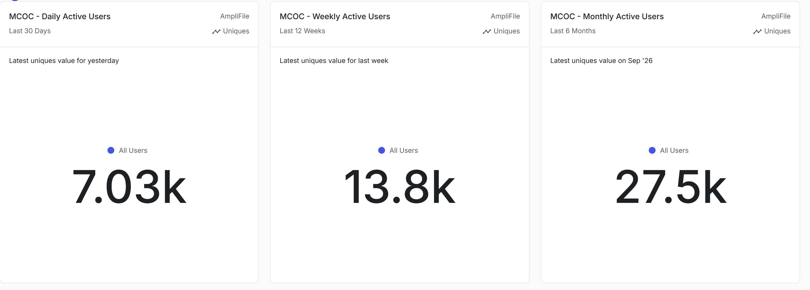
Daily, weekly and monthly active users for a Marvel Contest of Champions-style game, side by side in one Amplitude dashboard. Sample data from an Amplitude demo environment (AmpliFile), not Kabam data.
Every title.
Every player.
A few places we'd start, based on what you shared. Each title has its own players, economy, and rhythm.
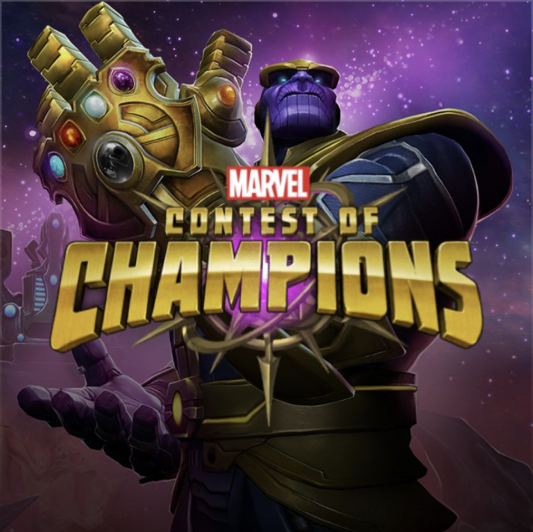
Marvel Contest of Champions
Progression-based segments, event and live-ops testing, and smarter win-back for lapsed champions.
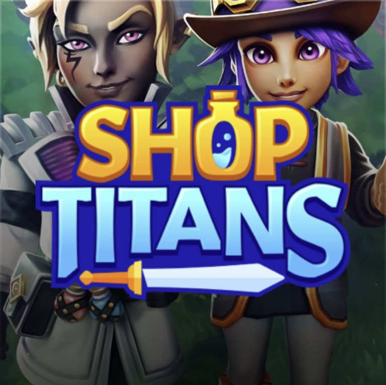
Shop Titans
Understand the trade and crafting loop, test offers and onboarding, and personalize by player stage.
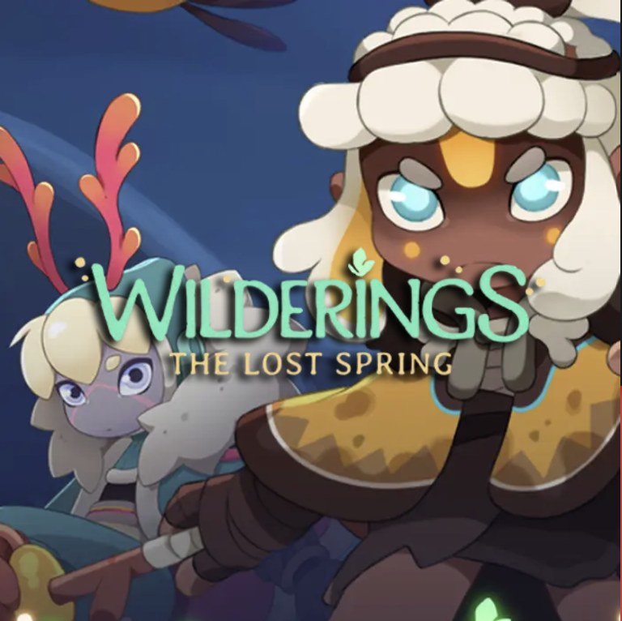
Wilderings: The Lost Spring
Launch new titles with a governed data foundation from day one, so retention, monetization, and LTV are measurable from the start.
Game art and names belong to their respective owners and are shown to illustrate the use cases.
About a 10 minute read.
Jump to any section, or use the bar at the top. Built from our conversation on October 20.
Four places where
Kabam and Amplitude
line up
Based on what we heard: experimentation and A/B testing, player behavioral analytics, and personalization at scale are the priorities for 2027, with a trusted data foundation underneath.
Trusted player data
Data taxonomyBigQueryBraze integration
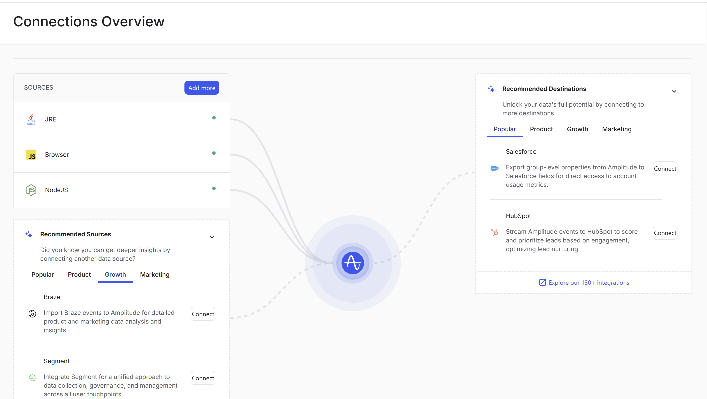
Connections Overview: data sources flow into Amplitude, and destinations carry governed data back out. Integrations such as Braze, Segment, Salesforce and HubSpot are one click away. Sample data from an Amplitude demo environment.
Experimentation everywhere
ExperimentWeb ExperimentationFeature FlagsStatsig
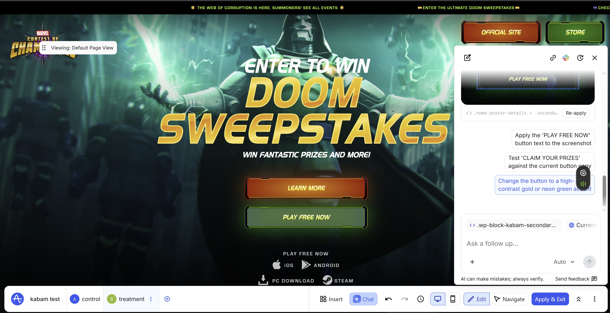
Web Experimentation visual editor: build a control and treatment on a live page, and use the built-in AI chat to propose and apply changes such as higher-contrast button copy, with no engineering ticket. Illustrative mock-up built in an Amplitude demo environment; not a live Kabam test.
Player behavioral analytics
FunnelsRetentionCohortsSession Replay
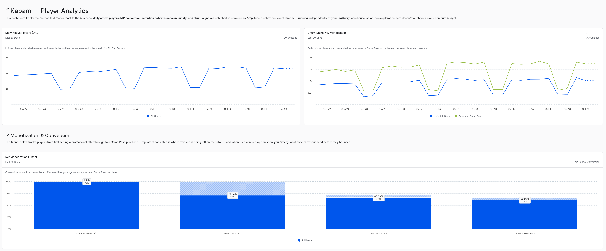
Player analytics in one view: daily active players, churn signal versus monetization, and an in-app purchase funnel from promotional offer to Game Pass purchase. Sample data from an Amplitude demo environment, not Kabam data.
Personalization at scale
AudiencesBrazePredictions
A behavioral audience, defined once: players who viewed a promotional offer but did not purchase a Game Pass in the last 30 days, with the expected range and anomaly detection layered on. From the same cohort, one click syncs the audience to Braze (highlighted) or sends it to an experiment, guide, survey or feature flag. Sample data from an Amplitude demo environment, not Kabam data.
Fitting the stack
Kabam already runs
Amplitude is designed to complement the tools you've invested in, not replace them. Here is how the pieces we discussed could connect.
One governed player data model
Analytics · Experiment · Feature Flags · Session Replay · AI Feedback · Audiences · Global Agent Warehouse-native analytics on BigQuery is on the roadmap for early 2027. Packaging and pricing to be confirmed by your account team.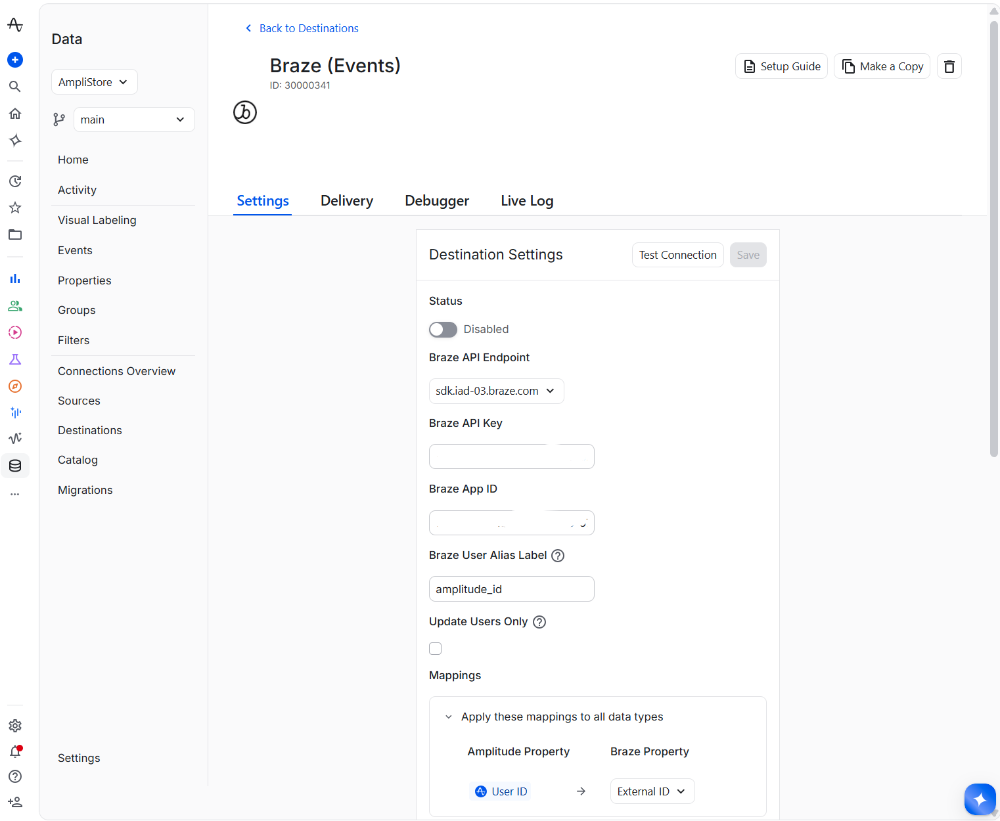
Connecting Braze: a few settings (API endpoint, credentials, and property mappings such as Amplitude User ID to Braze External ID) turn on the destination. The same Data area also manages sources and the BigQuery connection. Sample configuration from an Amplitude demo environment.
More ways Amplitude
can help
Ask the data in plain language
A lifecycle team of one shouldn't need to build a report for every question. Global Agent answers in natural language and builds charts on governed data, with admin controls and an audit trail.
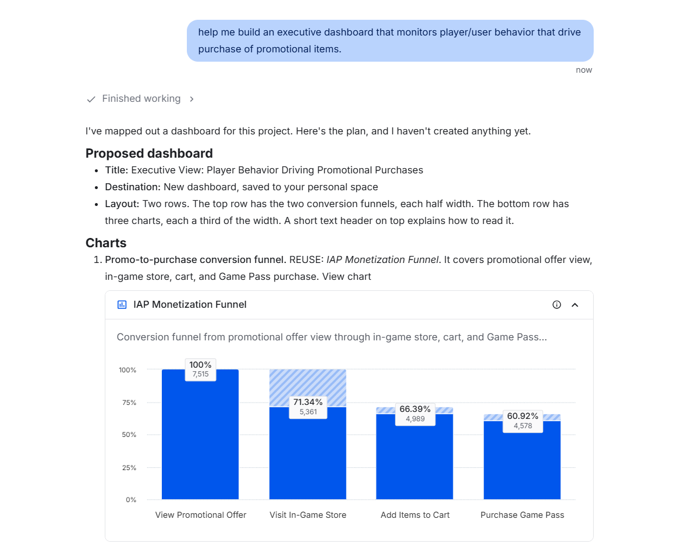
Global Agent turns a plain-language request into a proposed executive dashboard and reuses existing charts. Sample data from an Amplitude demo environment.
Hear the voice of the player
Player feedback is spread across Discord and forums. AI Feedback groups comments into themes, links them to behavior and session replays, and Guides & Surveys can ask players directly, in-game.
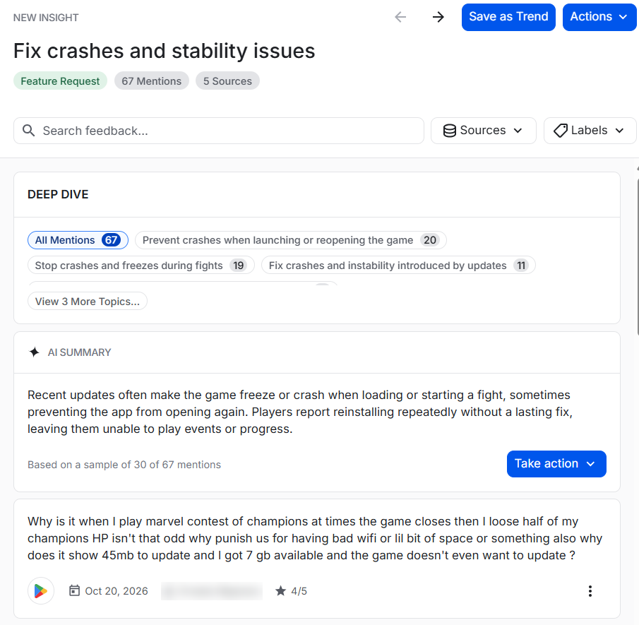
AI Feedback groups app store reviews into themes, summarizes them, and links each theme back to the individual mentions. Sample feedback shown in an Amplitude demo environment.
Alerts when something shifts
Anomaly detection learns each metric's normal range, flagging outliers even with no threshold set, so a drop after a release or a campaign is caught early. Alerts can post to Slack or Teams.
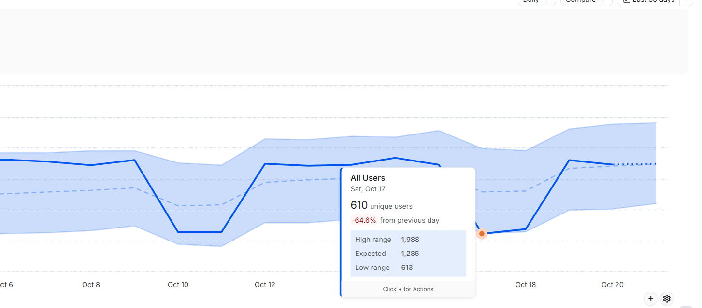
Anomaly & Forecast learns the expected range for a metric and flags points that fall outside it, such as this sudden drop in daily unique users. Sample data from an Amplitude demo environment.
Agents that analyze around the clock
Amplitude's AI agents don't just answer questions. They can watch your key metrics, run analysis on a schedule, and bring the findings to you in Slack or Teams, so a lean team can cover far more ground without more manual reporting.
Ask once, then let agents monitor retention, reactivation, and offer conversion, and summarize what changed and why, with charts and links back to the data.
Anomaly detection learns normal patterns, so unusual spikes in purchase volume, a surge of new accounts from one source, or bot-like session behavior stand out for your team to investigate.
Agents recommend and flag; your team decides. Admin controls and an audit trail show what was asked and what the agents did.
Global AgentDashboard AgentAnomaly & ForecastAmplitude MCP
Amplitude surfaces suspicious patterns in behavioral data; it complements, and does not replace, dedicated payments and fraud-prevention tools.
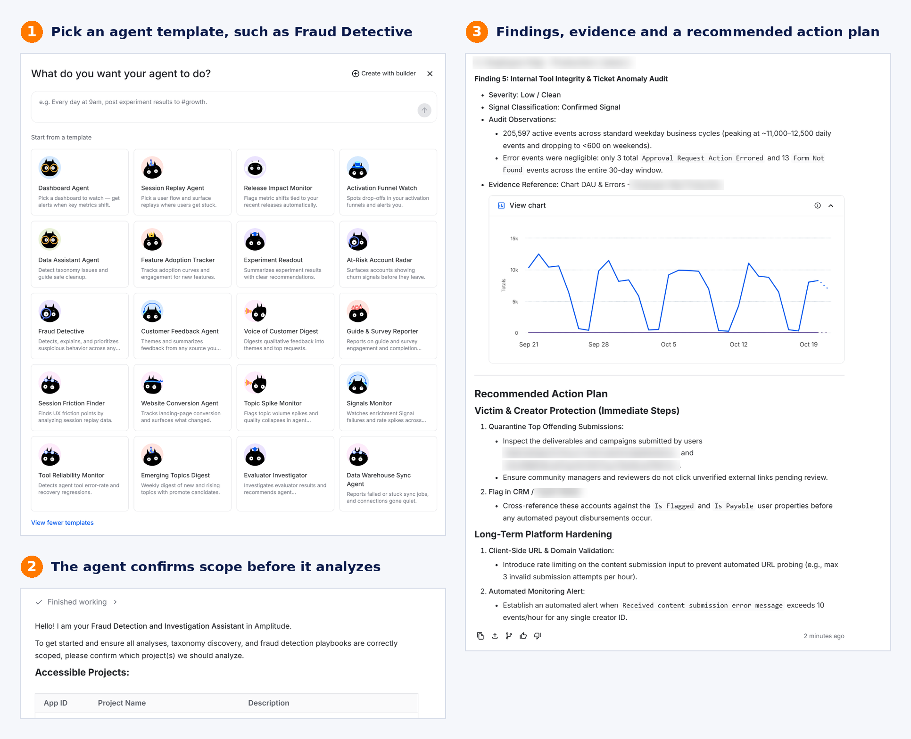
From template to findings: start from a ready-made agent such as Fraud Detective, confirm the scope, and get findings with the supporting chart and a recommended action plan. Example run on an Amplitude internal project, with identifiers removed.
Move at Kabam's pace,
start where value is fastest
We heard that bandwidth and data governance come first, and that the team grows in Q1 2027. This path is built around that timing, with nothing required before you're ready.
1 · Prepare
No lift for your team. We share relevant content and keep you posted as warehouse-native plans firm up.
- Relevant gaming and lifecycle content from Amplitude
- Confirm warehouse-native packaging and pricing
- Optional: governance and taxonomy best practices
2 · Scope
With the expanded team, we reconnect and scope the first use case together.
- Check-in on team growth and data governance progress
- Pick one use case: experimentation, behavioral analytics, or personalization
- Decide how to resource it: internal engineers or a services partner
3 · Pilot & expand
Prove value on one title or one lifecycle program, then expand.
- Instrument key player events with a governed taxonomy
- Sync cohorts to Braze; run first A/B tests
- Add feedback, replay, and agents as the team is ready
Why teams choose
Amplitude
The reasons customers and analysts cite most often, and what each one would mean for Kabam.
Who we are
Amplitude is a digital analytics platform for product analytics, experimentation (including the Statsig partnership for feature management and warehouse-native experimentation), audience activation, session replay, and AI agents that answer questions in natural language and turn insights into action. More than 4,900 customers, including Atlassian, Burger King, NBCUniversal, and Square, use Amplitude to understand behavior, run experiments, and optimize digital experiences.
AnalyticsExperiment & StatsigGuides & SurveysSession ReplayAI FeedbackAudiencesAI AgentsEase of use
Forrester calls Amplitude ideal "where product and marketing teams need close alignment and ease of use is a priority." On G2, ease of use is rated 86%, above the category average.
Speed to answer
Forrester Customer Favorite feedback singles out query engine speed. Funnels, retention, cohorts, and paths come back interactively.
Product and marketing, aligned
Engagement, persona, and conversion driver analyses on one behavioral model, plus a dedicated storytelling tool Forrester noted no other evaluated vendor offered.
Works with your warehouse
Forrester highlights bidirectional data warehouse integration, so Amplitude complements the warehouse and BI tools you already trust rather than replacing them.
Experimentation depth
Amplitude Experiment and feature flags run on the same data as analytics. The Statsig partnership extends cloud and warehouse-native experimentation for technical teams.
AI that assists and acts
Top possible Forrester scores (5/5) for AI for Insights and AI for Assistance. AI agents analyze data, experiments, and dashboards in natural language, with admin controls and an audit trail.
Consolidation and ROI
In Forrester's TEI study, the composite organization saw a 217% three-year ROI, payback in under six months, and $1.6M in tech-stack consolidation savings.
A partner-like approach
Customers in the Forrester Wave praise "Amplitude's collaborative, partner-like approach" and "favorable cost to value."
Proven leadership
A Leader and Customer Favorite in the Forrester Wave, Q3 2025, with the highest Current Offering score, and #1 in G2 Product Analytics for 24 consecutive quarters.
Independent proof
leaders can share
Analyst and peer recognition, cited to the public source so it can travel with this page.
Forrester Wave™ · Q3 2025
Highest Current Offering score of all vendors evaluated. Top possible scores (5/5) in 21 criteria, including Roadmap, Real Time and Predictive Analysis, AI for Insights, and AI for Assistance.
Forrester TEI™
Payback in under 6 months
G2 · Summer 2026
24 consecutive quarters. Rated 4.5 / 5 on G2. Ease of use 86% and meets requirements 87%, above category averages. Funnels, user-level analytics, and segmentation each cited at 100%.
Brands your leaders
will recognize
Public Amplitude stories from enterprise and consumer brands. Metrics as published; results vary by business.
Electronic Arts
EA's UX team had only basic analytics for its Creator Network, so onboarding drop-off was a black box. Funnel analysis pinpointed the friction points, Session Replay showed the moments behind them, and the team added more guidance and tooltips. Executives have since adopted behavioral data and a more evidence-based way of working.
Why it matters for Kabam: a gaming organization moving from black-box reporting to behavior-based decisions, pairing funnels with Session Replay to find and fix friction.
NBC
NBC Entertainment Digital used Amplitude so product teams could analyze cohorts, retention, and experiments without waiting days on data science. Experiment and cohort work dropped from days to hours.
Why it matters for Kabam: self-serve experimentation tied to retention and conversion.
Under Armour
Under Armour Connected Fitness (MapMyRun, MyFitnessPal) used Amplitude for cohorts, segmentation, retention, and funnels to validate product bets and refocus priorities.
Why it matters for Kabam: behavior-driven retention in a subscription and engagement app.
Calm
Used behavioral cohorts to prove that Daily Reminders drove retention, then promoted the feature so more users could benefit.
Why it matters for Kabam: proving which in-app behaviors drive retention, then nudging players toward them.
Jersey Mike's
Rebuilt the digital stack with Segment and Amplitude (with agency partner WWT), then personalized messaging to grow app orders and loyalty.
Why it matters for Kabam: a services partner plus Amplitude to move quickly on data foundations and personalized messaging.
Disney+ Hotstar
Scaled cohort, funnel, and A/B testing to improve stickiness across markets, with Amplitude integrated into warehouse and CRM pipelines for a single customer profile.
Why it matters for Kabam: consistent profiles across warehouse and engagement tools.
All metrics as published by Amplitude or the named customer. Customer references are available on request.
A partnership,
not a vendor handoff
Software is the easy part. What makes this work is a joint plan built around Kabam's priorities and timing, with the same people accountable from day one.
01 · Understand
Start from the outcomes that matter most: experimentation, behavioral insight, personalization, trusted data.
02 · Explore
See Amplitude on game-style workflows and sample player journeys, shaped around your questions.
03 · Focus
Align on the first use case and success measures, tied to the KPIs the team already watches.
04 · Enable
Hands-on onboarding and training, with room for a services partner of your choice.
05 · Grow
Regular reviews of value delivered and where to expand next along the phased path.
Your priorities set the agenda
Every recommendation starts from Kabam's goals and timing, and stays that way as you go deeper.
Complement, don't rip and replace
Amplitude works alongside Braze, BigQuery, Tableau, and your collaboration apps. We'll design around what you already trust.
Value you can measure
We'll define success with your team up front and report against it, so leaders see progress in their own terms.
Who you'll work with
One named account team from day one, backed by Amplitude's broader customer success and support organization.
Micah Stevenson
Your point of contact for the partnership: planning, commercials (including warehouse-native packaging), and making sure the right Amplitude people are in the room.
micah.stevenson@amplitude.comMichael Pakter
Your technical lead: runs tailored walkthroughs, maps Kabam's data into Amplitude, and works with your team on architecture and the Braze and BigQuery integrations.
michael.pakter@amplitude.comAnush Arora
Executive sponsor for the Kabam partnership. Available for leadership alignment and escalations as the partnership grows.
anush.arora@amplitude.comHands-on walkthrough
When you're ready, we can show Amplitude on game-style workflows and the topics that matter to your team, not a generic product tour.
Onboarding & enablement
Guided setup, instrumentation planning, and training for analysts and lifecycle marketers.
Ongoing success
Customer success and technical support after launch, with regular value reviews alongside your account team.
Ready when
you are.
This page is here so your team can learn how Amplitude works and where it may fit, on your timeline. Reach out anytime if something is unclear or you want a walkthrough.
Email Micah & Michaelmicah.stevenson@amplitude.com · michael.pakter@amplitude.com